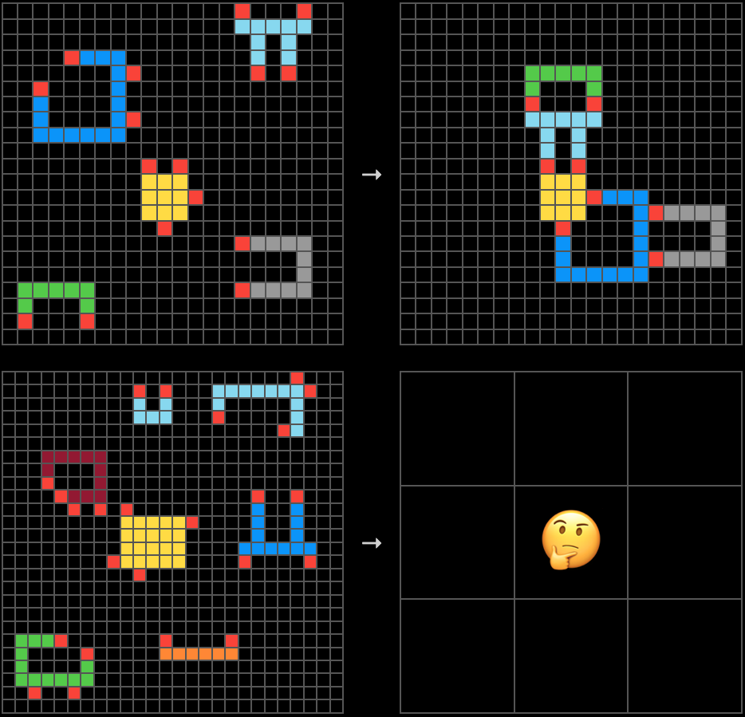
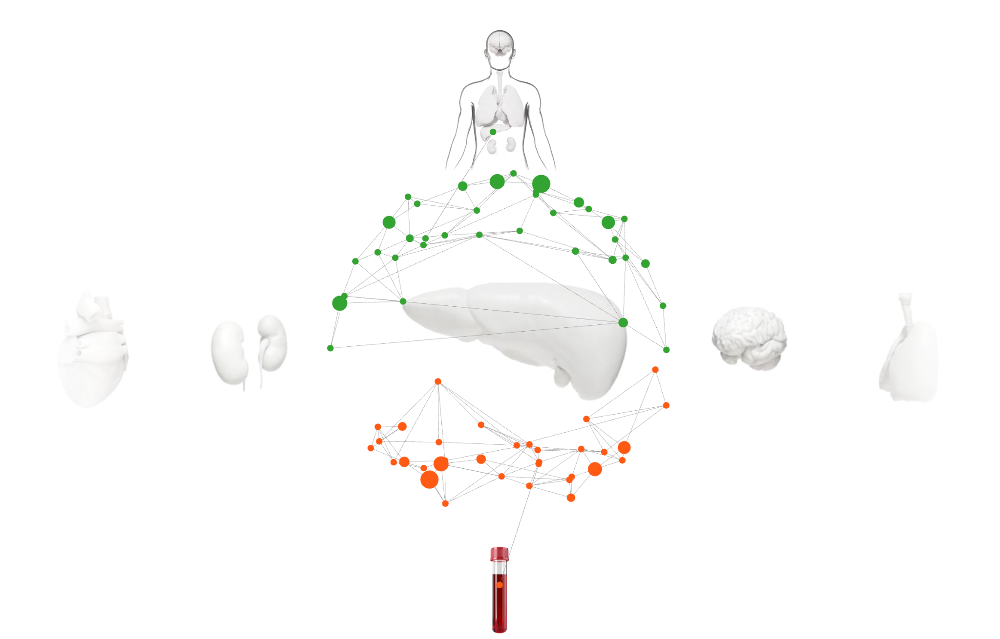

Satyam KumarI work on world models, video generation, and robot learning. I recently completed my MS in Computer Science at NYU Courant, where I conducted research at CILVR Lab. My work focused on action-conditioned video models for policy evaluation and latent-space planning for robotic manipulation. Previously, I worked at Curve Biosciences on research into early-stage detection of chronic diseases. I also spent two years at EdgeVerve Systems developing LLM applications, AI agents, and multimodal systems, alongside ML infrastructure for model training and deployment. |

SK
|
ResearchMy research interests include representation learning, world models, latent diffusion for video generation, robot policy (VLA) evaluation, model-based planning, and reinforcement learning. |
Video Generation |
Improving Video World Models for Manipulation Policy Evaluation
I investigated whether reconstruction-focused VAE latents limit action-conditioned video world models. I fine-tuned the VAE with reconstruction and action-conditioned JEPA prediction objectives, then trained a Diffusion Forcing transformer on the learned latents. I also studied manipulation policy evaluation with WorldGym: rolling out VLA policies from a single real observation and scoring simulated outcomes with a vision-language model. The focus was on assessing whether world-model evaluations reflect real-world success rates and preserve policy rankings. |
World Models & Planning |
Push-Letters: Manipulation Planning with DINO-WM
I built Push-Letters, a PushT-inspired manipulation benchmark, collected an expert dataset, and integrated it with DINO-WM. The model learns action-conditioned dynamics from offline trajectories in frozen DINOv2 patch-feature space. At test time, a cross-entropy method (CEM) planner optimizes actions toward a goal image, executing the first action and replanning through model predictive control. I evaluated goal reaching without rewards or demonstrations at planning time. DINO-WM project page / DINO-WM reference paper / PushT reference environment |
Selected Projects |
 RL Post-Training |
Math Reasoning with SFT and GRPO
I implemented SFT and GRPO from scratch to post-train Qwen2.5-Math-1.5B, using vLLM rollouts in a two-GPU policy/inference setup. SFT improved MATH-500 accuracy from 60.8% to 65.7%; GRPO with verified rewards improved Countdown development accuracy from 15.3% to 76.5%. I ran ablations on advantage and length normalization, baselines, and learning rate, tracking gradient norms and clip fraction. |
Efficient Language Models |
Parameter Golf: Language Modeling Under a 16 MB Budget
I explored compact language modeling under a 16 MB weights-and-code budget and a training limit of ten minutes on eight H100 GPUs. I proposed an architecture combining depth recurrence, aggressive quantization, an enriched subword tokenizer, and low-rank test-time adaptation, targeting tokenizer-agnostic bits-per-byte evaluation on FineWeb. |
 Abstract Reasoning |
ARC-AGI Challenge I developed a 14B LLM approach using LoRA-based cognitive priors, custom grid tokenization, and a dual-stage transduction–induction solver with a DeepSeek-R1 base. Combining test-time adaptation with four-way ensemble voting achieved 29% accuracy on the ARC benchmark in my experiments. |
Recurrent JEPA |
Action-Conditioned Representation Learning with Recurrent JEPA
I built a recurrent joint embedding prediction architecture to predict environment and agent representations from actions. I used VICReg and BYOL-inspired techniques to prevent representation collapse and incorporated MuZero-inspired action embeddings. Experiments used 64,000 frames for trajectory-based prediction. |
Professional Experience |
 Curve Biosciences |
Data Science and Machine Learning Intern
I built a multiple instance learning framework on genomic foundation model embeddings, designing Perceiver and Hierarchical Attention Transformer architectures for early-stage chronic disease detection. I implemented multi-GPU training with PyTorch DDP and optimized a GCP-backed data pipeline with prefetching and caching to reduce data-loading bottlenecks. |
EdgeVerve Systems |
Member of Technical Staff
I built multimodal question-answering systems for videos, images, and PDF documents using computer vision, audio processing, OCR, and NLP. I developed LangChain and LangGraph agents for video summarization and question answering, plus ReAct-based text-to-SQL retrieval. I also developed and deployed computer vision model trainers, model managers, and prediction APIs, using PostgreSQL, Redis, and RabbitMQ for storage, caching, and messaging. |
Samsung R&D Institute |
Research Intern, Camera Systems
I researched HDR reconstruction from a single LDR image and implemented four methods in TensorFlow/Keras. Optimizing a reverse camera pipeline reduced prediction time by a factor of five and model size by a factor of ten, while improving PSNR and SSIM. |
Education |
NYU Courant |
Master of Science in Computer Science
Courant Institute of Mathematical Sciences, New York University
New York, NY · Aug 2024 – May 2026
|
BITS Pilani |
Bachelor of Engineering in Electronics and Communication
Birla Institute of Technology and Science, Pilani
Hyderabad, India · Aug 2018 – May 2022
|